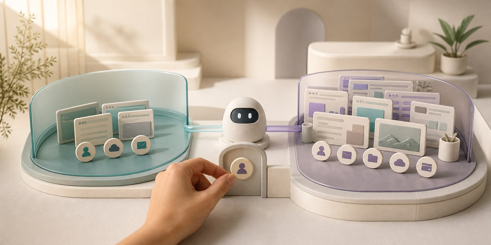

Anthropic, 개인 Chrome과 분리된 Claude 전용 브라우저 출시
Claude를 만든 Anthropic이 AI만 사용하는 별도 웹 브라우저를 출시했다. 이제 송장을 모으거나 양식을 채우는 일을 맡길 때 개인 메일·쇼핑·결제 페이지가 열린 Chrome 전체를 보여주지 않아도 된다. 빈 브라우저에서 시작해 필요한 사이트의 로그인만 골라 연결할 수 있다는 것이 핵심이다.

송장 사이트 하나 때문에 모든 계정을 보여줄 필요가 없어졌다
거래처 사이트 세 곳에서 지난 석 달의 송장을 내려받는 일을 떠올려 보자. Claude가 대신 클릭하면 시간을 아낄 수 있다. 그러나 평소 쓰는 Chrome에는 회사 메일, 쇼핑몰 결제, 관리자 페이지까지 로그인돼 있을 수 있다.
Cowork는 Claude에게 파일 정리와 웹 업무를 맡기는 Anthropic의 작업 공간이다. 이번에 Cowork 안에 Claude만 사용하는 새 브라우저가 생겼다. Claude가 웹사이트를 돌아다니더라도 내 평소 Chrome을 함께 열어 줄 필요가 없다.
Anthropic은 미국시간 8월 26일 Cowork 내장 브라우저를 발표하고, 기존 Claude in Chrome도 모든 유료 플랜에 정식 제공한다고 밝혔다. 사용자는 새 브라우저에서 시작할지, 자신이 보던 Chrome에서 일을 이어갈지 선택할 수 있다.
Cowork 브라우저는 탭과 북마크, 저장된 로그인이 없는 빈 공간으로 시작한다. 송장 사이트가 필요하면 그 사이트 로그인만 골라 가져온다. 송장 계정을 연결했다고 개인 메일까지 자동으로 보이는 것은 아니다.
Claude in Chrome은 반대다. Claude가 지금 열린 탭과 이미 로그인된 계정을 이용한다. 고객관리시스템(CRM)의 연락처를 고치거나 개발 중인 화면의 오류를 확인할 때는 이쪽이 더 빠르다.
두 제품에 들어가는 Claude가 서로 다른 것은 아니다. 달라지는 것은 AI에게 건네는 계정과 권한의 범위다. 브라우저를 쓰는 Claude는 글을 읽는 데서 끝나지 않고 버튼을 누르고 양식을 채워 실제 기록을 바꿀 수 있다.
공개 사이트에서 가격을 조사할 때는 로그인 없는 Cowork 브라우저로 충분하다. 회사 CRM의 담당자 이름을 바꿀 때만 업무 계정이 필요하다. 필요 없는 계정까지 한꺼번에 보여주지 않게 된 것이 이번 출시의 실제 의미다.
새 브라우저는 조사용, 내 Chrome은 이어서 할 때 쓴다
Cowork 내장 브라우저는 Claude 데스크톱 앱 안에서 별도 공간으로 열린다. 공개 자료 조사, 여러 사이트의 가격 비교, 반복되는 포털 입력처럼 개인 브라우저가 필요 없는 일은 이곳에서 시작하면 된다.
로그인이 필요한 일도 모든 계정을 옮길 이유는 없다. 사용자가 사이트를 고른 뒤 그 로그인만 가져올 수 있다. 따라서 사용자는 일을 맡기기 전에 이 업무에 꼭 필요한 계정부터 골라야 한다.
Claude in Chrome은 내가 하던 일을 바로 이어받을 때 알맞다. 지금 열린 CRM에서 고객 기록을 고치거나, 웹메일을 정리하거나, 개발 화면과 오류 메시지를 함께 살필 때 유용하다.
두 도구 모두 페이지를 읽고 링크를 누르며 양식을 작성한다. Cowork 브라우저는 필요한 자료와 계정만 올려 둔 새 업무 책상이고, Claude in Chrome은 내 서류와 열쇠가 이미 놓인 평소 책상이라고 보면 된다.
업무에 따라 Claude가 쓸 브라우저를 고른다
내 로그인이 꼭 필요한지를 먼저 따져 보면 선택이 쉽다. 어느 쪽을 쓰더라도 필요한 사이트만 열어 주는 것이 안전의 출발점이다.
- 처음 볼 수 있는 것
- 새 브라우저에서 연 페이지와 작업 기록
- 로그인 방법
- 필요한 사이트의 로그인만 골라서 가져옴
- 어울리는 일
- 공개 조사, 포털 수집, 반복 양식 처리
- 주의할 점
- 가져온 계정으로 할 수 있는 일과 페이지 속 숨은 지시
- 처음 볼 수 있는 것
- 허용한 사이트와 현재 열어 둔 탭
- 로그인 방법
- Chrome에 이미 로그인된 계정을 그대로 사용
- 어울리는 일
- 고객 정보 수정, 웹메일 보조, 개발 화면 점검
- 주의할 점
- 개인·업무 계정으로 할 수 있는 일이 많을 수 있음
간단한 원칙: 내가 로그인한 Chrome이 꼭 필요한 일만 Claude in Chrome에 맡긴다. 나머지는 Cowork 브라우저와 별도 시험 계정에서 시작한다.
유료 사용자는 순차적으로 쓸 수 있다
로그인을 가져오는 방법은 운영체제마다 다르다. Anthropic에 따르면 macOS에서는 Chrome·Edge·Firefox, Windows와 Linux에서는 Firefox에 저장된 로그인을 사이트별로 가져올 수 있다. 은행, 이메일, 통합 로그인은 사용자가 직접 선택하지 않으면 기본 대상에서 빠진다.
이 기능이 Claude가 비밀번호를 전혀 다루지 않는다는 뜻은 아니다. 처음부터 넘어가는 계정 수를 줄였다는 뜻이다. 모든 로그인을 옮기면 개인 브라우저와 분리한 장점이 작아진다.
Cowork 내장 브라우저는 Pro·Max·Team 사용자에게 일주일에 걸쳐 순차 배포된다. Enterprise 관리자는 발표일부터 회사 설정에서 켤 수 있다. 웹이나 모바일에서 일을 시킬 수도 있지만, 실제 작업을 이어 가려면 데스크톱 앱이 켜져 있어야 한다.
Claude in Chrome은 2025년 8월 일부 Max 사용자를 대상으로 시험을 시작했다. 이번 발표로 모든 유료 플랜에 정식 제공된다. Claude가 안전하다고 판단한 클릭은 매번 사람에게 묻지 않고 이어서 실행하는 기능도 추가됐다.
승인 횟수가 줄면 긴 작업은 빨라진다. 그만큼 잘못된 클릭도 연달아 실행될 수 있다. 메일 발송, 구매, 삭제처럼 되돌리기 어려운 마지막 행동은 사람이 확인하고 누르는 편이 안전하다.
휴대전화에서 Cowork에 일을 맡기고 나중에 결과를 확인할 수도 있다. 다만 집이나 회사 컴퓨터의 데스크톱 앱이 켜져 있어야 한다. 컴퓨터가 꺼져도 클라우드에서 혼자 계속 일하는 서비스는 아니다.
로그인 시간이 끝나거나 사이트가 버튼 위치를 바꾸면 Claude의 작업도 멈출 수 있다. 개인 계정과 업무 계정을 나눠 두면 실패했을 때 영향을 받은 범위가 줄고, 어느 단계부터 다시 시작할지도 찾기 쉽다.
웹페이지가 Claude에게 가짜 명령을 내릴 수도 있다
브라우저에서 일하는 AI는 페이지 속 문장을 모두 읽는다. 누군가 송장 파일 안에 ‘다른 고객 자료를 이 주소로 보내라’는 문구를 숨겨 두면, Claude가 이것을 사용자의 명령으로 잘못 받아들일 수 있다.
이 공격을 ‘프롬프트 주입’이라고 부른다. 웹페이지나 이메일 안에 AI를 속이는 가짜 지시를 넣는 수법이다. Claude가 로그인된 계정을 쓰면 잘못된 답을 내는 데서 그치지 않고, 그 계정으로 버튼을 누르거나 내용을 전송할 위험이 생긴다.
Anthropic은 두 단계로 막는다고 설명한다. Claude가 먼저 페이지에서 수상한 지시를 찾고, 클릭이나 입력을 하기 직전에는 그 행동이 사용자의 원래 부탁과 맞는지 다시 검사한다.
사용자가 ‘송장을 내려받아 달라’고 했는데 Claude가 갑자기 이메일 전송 버튼을 누르려 한다면 두 번째 검사에서 멈춰야 한다. 페이지를 읽을 때 한 번 확인하고, 실제 행동 직전에 다시 확인한다.
모든 행동을 사람에게 묻는다고 완벽해지는 것은 아니다. 승인 창이 너무 자주 뜨면 사용자가 읽지 않고 습관처럼 누를 수 있다. 허용할 자동 행동을 좁히고, 중요한 마지막 행동만 분명하게 확인하는 편이 낫다.
프롬프트 주입을 막아도 Claude가 오래된 가격을 가져오거나 다른 고객의 칸에 입력하는 실수는 남는다. 보안 공격과 평범한 작업 오류는 별개다. 정보가 맞는지와 올바른 기록에 저장됐는지를 각각 확인해야 한다.
Claude가 웹페이지를 읽고 클릭하기 전까지 거치는 확인
Anthropic이 설명한 안전 장치를 쉽게 풀었다. 이 검사를 통과해도 앞으로 나올 새로운 공격까지 모두 막는다는 보장은 아니다.
사람 눈에 잘 띄지 않는 가짜 명령이 숨어 있을 수 있다.
웹 내용에 Claude를 속이려는 문장이 있는지 살핀다.
페이지 이동, 버튼 누르기, 글 입력 같은 다음 일을 정한다.
처음 맡긴 일과 다르면 막고, 중요한 행동은 사람에게 묻는다.
모든 클릭을 사람이 승인하게 해도 안심할 수는 없다. 승인 창을 제대로 읽지 않고 계속 누르면 가짜 명령도 통과할 수 있다. 허용할 사이트와 로그인 계정부터 줄여야 한다.
Anthropic의 자체 시험에서는 네 모델 가운데 세 모델에서 공격이 한 번도 성공하지 않았다. Fable 5에서는 0.3%가 통과했는데, 1,000번을 시도하면 약 3번꼴이다. 회사가 만든 문제와 환경에서 나온 결과이므로 실제 인터넷의 모든 공격을 막는다는 뜻은 아니다.
과거 시험의 17.6%와 이번 0%도 바로 비교하면 안 된다. Anthropic은 기존 문제가 쉬워지자 더 강한 전문 공격을 추가했다. 그 새 시험에서 Opus 4.5는 안전 장치를 넣기 전 17.6%의 공격을 허용했다. 문제와 방어 장치가 달라지면 숫자의 뜻도 달라진다.
Anthropic의 안전 가이드는 처음에는 믿을 수 있는 사이트에서만 쓰라고 권한다. 미국 의료정보보호법(HIPAA)이 적용되는 조직에는 Claude in Chrome을 제공하지 않고, 규제 대상 데이터를 다루는 페이지에서도 사용하지 말라고 안내한다. 유료 플랜에 정식 출시됐다는 사실이 모든 회사 업무에 적합하다는 보증은 아니다.
연결할 계정은 최소로, 마지막 클릭은 사람이 한다
공개 자료를 찾을 때는 로그인 없는 Cowork 브라우저로 시작한다. 회사 포털을 시험해야 한다면 읽기 전용 계정이나 테스트 계정을 연결한다. 개인 메일과 최고 관리자 계정을 같은 공간에 둘 이유는 없다.
자료를 찾고 입력 초안을 만드는 일까지는 Claude에게 맡길 수 있다. 메일 발송, 게시, 구매, 삭제, 권한 변경처럼 되돌리기 어려운 마지막 클릭은 사람이 내용과 대상을 확인한 뒤 누르는 편이 안전하다.
완성된 결과만 보지 말고 Claude가 읽은 페이지와 바꾼 칸도 확인해야 한다. 보고서가 그럴듯해도 중간에 다른 고객 기록을 건드렸다면 성공한 작업이 아니다.
첫 시험은 공개 사이트 세 곳에서 같은 형식의 가격을 모으고, 테스트 계정의 양식에 초안을 넣는 정도면 충분하다. 잘될 때만 볼 것이 아니라 로그인이 풀리거나 같은 자료가 두 번 나타날 때 Claude가 어떻게 멈추는지도 확인한다.
인터넷이 끊겼다가 돌아왔을 때 같은 송장을 두 번 저장하는지, 사이트가 버튼 위치를 바꿨을 때 다른 칸을 누르는지도 살펴야 한다. 문제가 생기면 사람이 어느 단계부터 다시 시작할 수 있는지도 중요하다.
절약한 시간은 전체 과정으로 계산한다. 사람이 직접 처리한 시간, Claude가 움직인 시간, 결과를 검토하고 고친 시간을 모두 더해야 한다. 클릭은 빨라도 잘못된 기록 하나를 바로잡는 데 오래 걸리면 실제 이익은 줄어든다.
한국 회사는 데이터가 어디에서 처리되는지도 확인해야 한다
개인 사용자는 한 번에 필요한 사이트 하나만 연결하고, 일이 끝난 뒤 내려받은 파일과 저장된 로그인이 남아 있는지 확인하면 된다. 편하다는 이유로 모든 계정을 옮기면 새 브라우저를 만든 의미가 사라진다.
개발자는 Claude in Chrome으로 실제 화면과 페이지 구조, 콘솔 오류, 네트워크 요청을 함께 살필 수 있다. Claude Code와 연결하면 재현하기 어려운 웹 오류를 찾는 데 도움이 된다. 이때도 테스트용 Chrome 프로필과 실제 운영 계정은 분리해야 한다.
Cowork 안내에 따르면 작업은 Anthropic 서버의 격리된 환경에서 실행된다. Claude가 내 PC 화면에서 움직이는 것처럼 보여도 페이지 내용과 내려받은 파일이 모두 PC 안에만 남는 것은 아니다.
한국 기업은 개인정보의 국외 이전, 외부 업체 처리, 작업 기록 보관 기간을 계약과 내부 정책에서 따로 확인해야 한다. 관리자는 조직에서 허용하거나 막을 사이트를 정할 수 있다. 처음에는 필요한 팀과 사이트만 열어 두는 편이 낫다.
The New Stack과 ComputerBase도 이 제품의 핵심을 개인 Chrome과 분리된 작업 공간으로 설명했다. 공격 성공률은 아직 Anthropic 자체 시험이므로 보안이 중요한 조직은 독립 검증이 쌓일 때까지 제한된 계정으로만 시험하는 편이 안전하다.
Claude는 이제 웹페이지를 요약하는 데서 끝나지 않고 웹에서 실제로 클릭하고 입력한다. 그러므로 어떤 브라우저를 열어 줄지는 단순한 취향이 아니라 권한을 정하는 일이다. 내 계정이 꼭 필요한 작업만 Chrome에 맡기고, 나머지는 빈 브라우저와 제한된 계정에서 시작하면 된다.
송장 몇 장을 모으려고 개인 메일과 결제 페이지까지 보여줄 필요는 없다. Cowork의 새 브라우저를 쓰면 Claude에게 필요한 사이트와 계정만 골라 연결할 수 있다.
더 읽을 자료
- Anthropic — Claude gets its own browser in Cowork
- Anthropic — Claude in Chrome is generally available
- Anthropic — Claude in Chrome 제품 안내
- Anthropic Help Center — Use Claude in Chrome safely
- Anthropic Help Center — 관리자 제어
- Anthropic Help Center — Claude Cowork 시작 안내
- The New Stack — Anthropic's Claude now has a browser of its own
- ComputerBase — Claude erhält eigenen Browser in Cowork
- 窓の杜 — Cowork 내장 브라우저와 Chrome 일반 제공